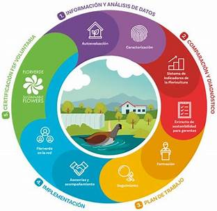
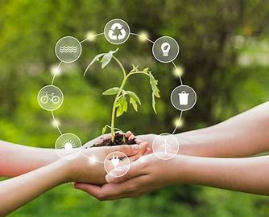
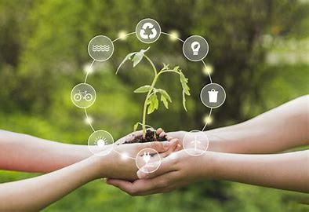
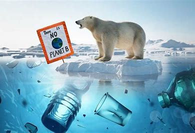
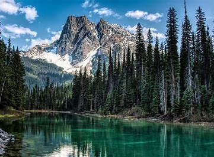

En primer lugar, la Sostenibilidad es asumir que la naturaleza y el medio ambiente no son una fuente inagotable de recursos, siendo necesario su protección y uso racional.
En segundo lugar, la Sostenibilidad es promover el desarrollo social buscando la unión entre comunidades y culturas. Con esto, busca para alcanzar niveles satisfactorios en la calidad de vida, salud y educación.
En tercer lugar, la sostenibilidad es promover un crecimiento económico que genere riqueza equitativa para todos sin dañar el medio ambiente.

Definición de Sostenibilidad
La definición de sostenibilidad se refiere, a la satisfacción de las necesidades actuales sin comprometer la capacidad de las generaciones futuras de satisfacer las suyas, garantizando el equilibrio entre crecimiento económico, cuidado del medio ambiente y bienestar social.
Por lo tanto, el desarrollo sostenible, es aquel modo de progreso que mantiene ese delicado equilibrio hoy, sin poner en peligro los recursos del mañana. Para lograrlo se necesita aplicar la regla de las 3 r, regla de las 5 r así como la reducción residuos y basura. Con acciones como estas podemos combatir el cambio climático y el calentamiento global.

Tipos de Sostenibilidad
La Sostenibilidad está tipificada en varios conceptos relacionados como la sostenibilidad ambiental,
la sostenibilidad social y la sostenibilidad económica. En consecuencia, muchos de los retos a los que se enfrenta el ser humano tales como el cambio climático o
la escasez de agua sólo se pueden resolver desde una perspectiva global y promoviendo el desarrollo sostenible.
Sostenibilidad Ambiental
La Sostenibilidad Ambiental es aquella que se enfoca en preservar la biodiversidad sin tener que renunciar al progreso económico y social.
Se refiere a la capacidad de poder mantener los aspectos biológicos en su productividad y diversidad a lo largo del tiempo y, de esta manera, ocuparse por la preservación de los recursos naturales fomentando una responsabilidad consciente sobre lo ecológico y, al mismo tiempo, crecer en el desarrollo humano cuidando el ambiente donde vive.
En la actualidad muchas empresas y compañías comenzaron a impulsar estos cambios.

Sostenibilidad Económica
La Sostenibilidad Económica se encarga de que las actividades que buscan la sostenibilidad ambiental y social sean rentables.
Se refiere a la capacidad de generar riqueza en forma de cantidades adecuadas, equitativas en distintos ámbitos sociales que sea una población capaz y solvente de sus problemas económicos, tanto como fortalecer la producción y consumo en sectores de producción monetaria.
En pocas palabras es un equilibrio entre el ser humano y la naturaleza para satisfacer las necesidades y no sacrificar generaciones futuras.
Sostenibilidad Social
La Sostenibilidad Social busca la cohesión de la población y una estabilidad de la misma.
Se refiere a adoptar valores que generen comportamientos como el valor de la naturaleza, mantener niveles armónicos y satisfactorios de educación, capacitación y
concienciación ofreciendo apoyo a la población de un país para superarse, mantener un buen nivel de vida, y promoviendo que se involucren estas mismas personas para crear algo nuevo en la sociedad de la que forman parte hoy en día.
Sostenibilidad Política
La Sostenibilidad Política busca la gobernabilidad con reglas claras para equilibrar el medio ambiente, la economía y la sociedad.
Se refiere a redistribuir el poder político y económico, que existan reglas congruentes en el país, un gobierno seguro y establecer un marco jurídico que garantice el respeto a las personas y el ambiente,
fomentando relaciones solidarias entre comunidades y regiones para mejorar su calidad de vida y reducir la dependencia de las comunidades generando estructuras democráticas.
Ejemplos de Sostenibilidad
A continuación algunos ejemplos de Sostenibilidad para poder llevar este concepto a la práctica en diversas áreas de nuestra vida.
Organismos dedicados a la Sostenibilidad
A nivel internacional existen diversos organismos que nos guían y acompañan en el camino hacia la sostenibilidad y otros temas como cuidado del medio ambiente, calentamiento global, cambio climático, entre otros.
Foro Político de Alto Nivel sobre el Desarrollo Sostenible
El Foro Político de Alto Nivel sobre el Desarrollo Sostenible se constituyó como resultado de la Conferencia de 2012 de las Naciones Unidas sobre el Desarrollo Sostenible
(Río +20) al sustituir a la Comisión sobre el Desarrollo Sostenible. El Foro es un subsidiario del Consejo Económico y Social y de la Asamblea General.
Comisión sobre el Desarrollo Sostenible
La Comisión sobre el Desarrollo Sostenible es una subsidiaria del ECOSOC que tiene como responsabilidad principal todo lo referente a cuestiones ambientales.
Grupo Intergubernamental de Expertos sobre el Cambio Climático
El Grupo Intergubernamental de Expertos sobre el Cambio Climático es un órgano especializado
de expertos que examina la investigación científica e informa a los encargados de la formulación de políticas.

Foro de las Naciones Unidas sobre los Bosques
El Foro de las Naciones Unidas sobre los Bosques es un subsidiario del ECOSOC; asumió la responsabilidad de las labores de los dos organismos predecesores que se indican abajo.

Programa de las Naciones Unidas para el Medio Ambiente
El Programa de las Naciones Unidas para el Medio Ambiente (PNUMA) es el portavoz del medio ambiente dentro del sistema de las Naciones Unidas.
El PNUMA actúa como catalizador, promotor, educador y facilitador para promover el uso racional y el desarrollo sostenible del medio ambiente mundial.